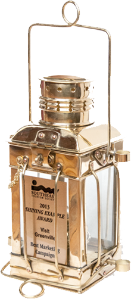
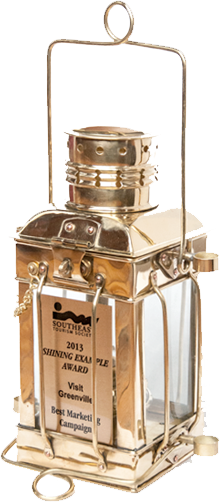

BACKDROP
It’s no secret that we love Greenville, SC, so when the former Greenville Convention & Visitors Bureau approached Brains on Fire about creating a new identity for our hometown, they didn’t have to ask twice. We knew this was far more than an identity project; it was an opportunity to foster a greater sense of community within our community.
 
